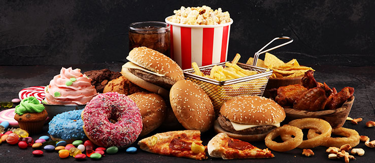

Resumo dos alimentos processados Alimentos processados são aqueles que passaram por algum tipo de alteração industrial para aumentar sua durabilidade, melhorar o sabor ou facilitar o consumo. Geralmente recebem ingredientes como sal, açúcar, óleo ou conservantes. Exemplos: pão, queijo, iogurte natural, milho em conserva, atum enlatado e extrato de tomate. Vantagens: Maior tempo de conservação. Praticidade no preparo e consumo. Podem manter boa parte dos nutrientes do alimento original. Cuidados: Alguns contêm quantidades elevadas de sal, açúcar ou gordura. O consumo excessivo pode prejudicar a saúde. Conclusão: alimentos processados podem fazer parte de uma alimentação equilibrada, mas é importante priorizar alimentos in natura ou minimamente processados e consumir os processados com moderação.